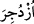

harfi, takib ve tafsilatlı açıklama harfidir. İcmâlen ve özet olarak geçen bir husûsu
tafsilatlı bir açıklama tâkîb eder. Nûh (a.s.)’un azamet nûnuna izâfetle ubûdiyyet/kulluk
makamında zikredilmesi, ona tâzim ve makamını, mevkiini yüceltmek, onu yalanlamanın
ne kadar büyük bir cüret ve kötülük olduğunu göstermek içindir. Zira bir kulun kendi
sultanını yalanlaması, bir başkasını yalanlamasından daha büyük bir cürettir.
Bu âyet-i kerîme’de, Allah’a kul olmaktan daha büyük bir şeref olmadığına işâret
vardır. Çünkü, rubûbiyet makamının mukabili olan hakîkî zillet ve tevâzû yalnız ve
yalnız Allah(c.c.)’a mahsustur. Göstermelik olmayan ve tevâzû ile anlatılan ubûdiyet de
kul’a mahsustur. Sadece yumuşaklık demek olan “temalluk” kavramının mânâsına itibar
yoktur. “Ben âdemoğlunun efendisiyim ama övünmüyorum”[148] hadis-i şerifi’nde
buyurulmuş oluyor ki, benim üstünlük ve faziletim risâletle değil, ubûdiyetle Allah’a kul
olmakla, özellikle tamamen mecâzî varlıktan soyunmak olan fakirlikledir.
“O, delirdi, dediler.” Onun hakkında veya ona hitaben “gerçekten sen delisin”
dediler. Yâni, onu yalnız yalanlamakla kalmadılar, ona delilik ve akıl hastalığı isnâd
ettiler. Bu yalanlamada aşırılıktır. Çünkü, yalancılardan bazı kişiler aklın kabul edeceği
uygun şeyleri de haber verir. Halbuki, deli, ancak aklın kabul etmeyip reddettiği şeyleri
söyler.
“Ve (Nûh, dâvetten vazgeçmeye) zorlandı.” Yâni Nûh (a.s.) çeşitli işkencelerle,
tebliğden alıkonuldu. Sövmek, dövmek ve taşla işkence etmek gibi tehditlerle
engellendi.
Râğıb der ki, “
/Üzdücire” fiilinin anlamı, “kovuldu” demektir. “
/Zecr”
kelimesinin kullanılması ise onların kovulan kişiye bağırmak için, “çekil yanımdan,
kenara çekil, geri çekil” gibi, Hz. Nûh (a.s.)’a söyledikleri sözlerdendir. Yâni, “o
delidir, onu cinler tutup çarptı, aklını bozdu, aklını alıp gitti, kalbini alıp uçurdu”
dediler.
Bu âyet-i kerîmede azgınların, hevâ ve heveslerine uyanların, bidatçıların galip
gelmesi ve bâtıldan yana olanların çokluğu sebebiyle, her gerçeğe dâvetçinin
yalanlanmasının kaçınılmaz olduğuna işâret vardır. Bu her zaman ve çağda olacaktır.
Bunun gibi ruhtan yana olan Nûh (a.s.)’ın, kötülüğü çok emreden nefsinden yana olan
kavmi de öyledir. Onların kötü alışkanlıklarından vaz geçmelerinin zor olması, şehvet
ve zevklerine düşkün bulunmaları sebebiyle onun Allah’a dâvetini kabul etmemeleridir.
Her yer ve durumda yegane yardım edebilecek yalnız Allah’tır.
Bu arzular dünyası bir puthânedir
Peygamberlere de kâfirlere de yuvadır.
Fakat şehvet, arınmışlara kul olur;
Çünkü hâlis altın yanmaz.
Şiir:
Ruhların zilleti bedenlerindendir.